Einkaufszentren sind...
- sehr sauber und immer kundenorientiert
- sicher
- aber immer anderes - jeden Tag ist etwas neu und das zieht Kunden und Besucher an.
Schaffen Sie ein völlig neues Besuchserlebnis – unabhängig ob Sie Ihre Kunden im Internet, in den sozialen Netzwerken oder am POS besuchen.
Nutzen Sie Cross-Mediale Kampagnen zur effektiven und bedarfsgerechten Kundenansprache.
Unser Lösungsangebot –
Ihr Nutzen
Filialbaustein: Vor dem Gebäude
Filialbaustein: Schaufenster
Schaufenster mit Touchscreen 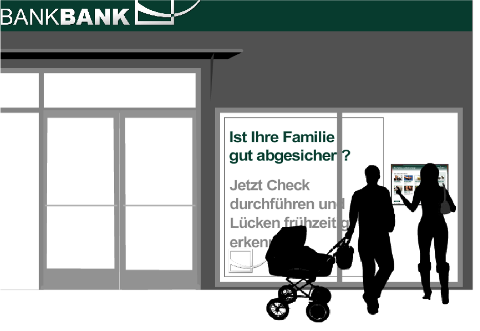Innovative Designelemente
iPad-Stele als Self-Service-System in der Filiale
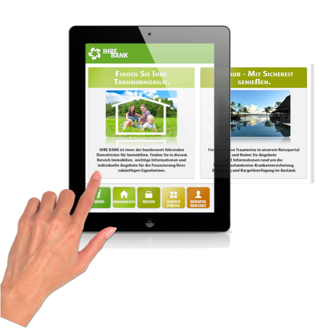
Multifunktionales Lifestyle-Touchsystem, muss nicht über das Rechenzentrum betrieben werden. Bietet Werbe- und Informationsmöglichkeiten für die Bank.
Hervorragendes Preis-/Leistungs- verhältnis, geringe Stellmaße – passt in jede SB-Zone einer Bank
Zusatzfunktionen, wie Videokonferenzen mit dem Berater, Terminvereinbarung etc möglich.
Mehr Frequenz in der Beratung durch neue, interaktive Medien in der Filiale
Videokonferenz-Funktion ermöglicht die Kontaktaufnahme mit dem zuständigen Berater der Bank oder dem Empfang.
Option: Telefonhörer, macht die Kontaktaufnahme auf Wunsch diskret.
Option: Telefonhörer, macht die Kontaktaufnahme auf Wunsch diskret.
Umfassendes Hosting und Monitoring der Geräte sowie automatische Softwareverteilung und Fehlererkennung verfügbar.
Optional: Einbindung in das Bankennetz.
umfangreiche Individualisierungsmöglichkeiten
Mehr Aufmerksamkeit erreichen
- Das interaktive Schaufenster
Xbox Kinect bringt berührungslose Gestensteuerung ins Wohnzimmer
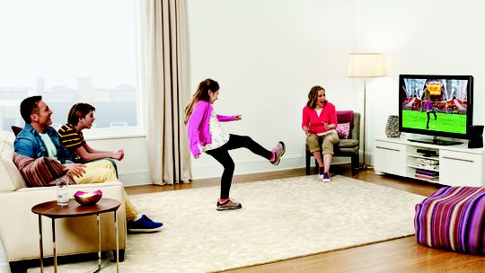
Kinect als berühlungslose Eingabesteuerung für Digial-Signage
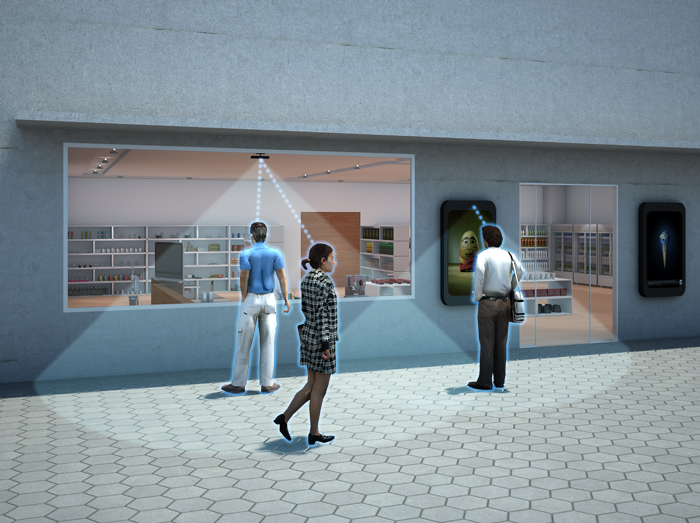
Die Usecases sind endlos!
Plus an Information auch ausserhalb der Öffnungszeiten
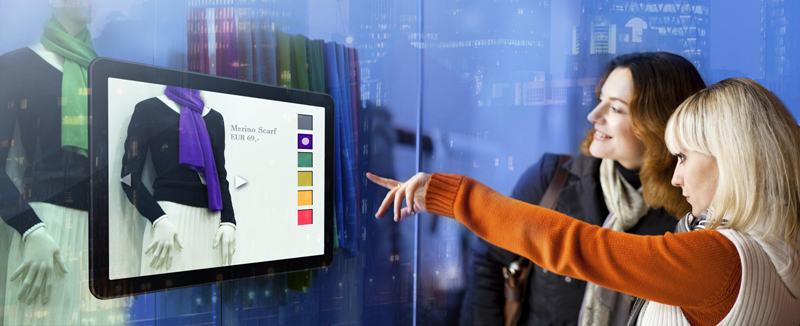
Beste Wirkung in Wartezohnen
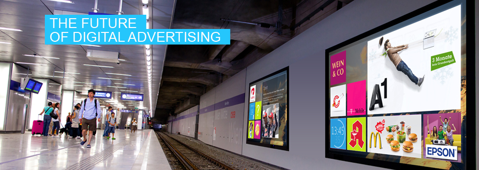
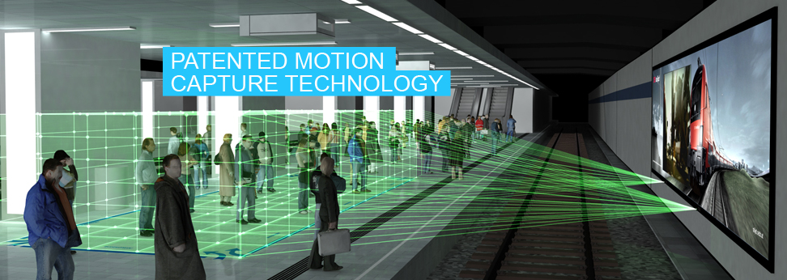
TODO Kinect Shopping insights
TODO Kinect Hand Movie
Touch Projektoren auf Basis von Kinect
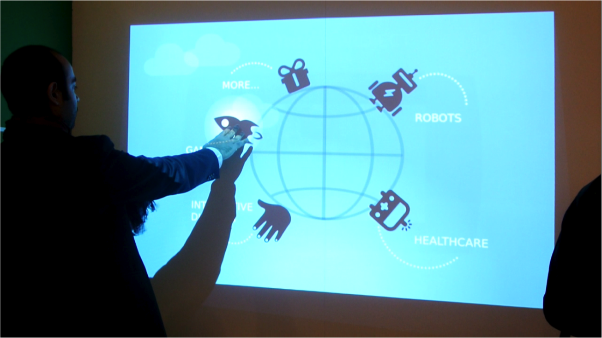
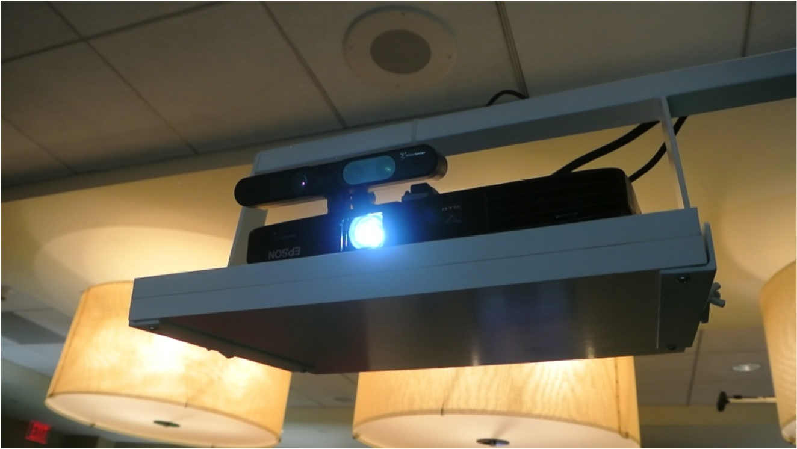
Gestenerkennung ist längst kein Hype mehr!
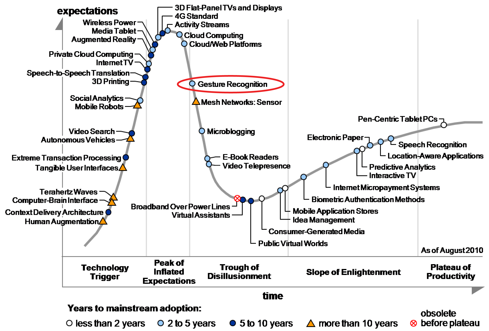
"There is more than one..."
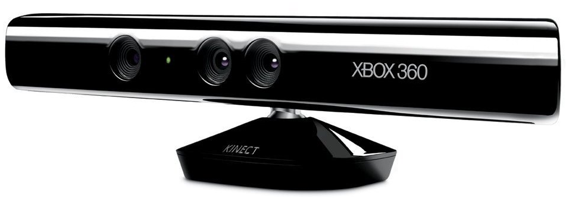
Lizenz für kommerziellen Einsatz und "Near Mode"

PrimeSense Alternative auch für kurze Distanzen
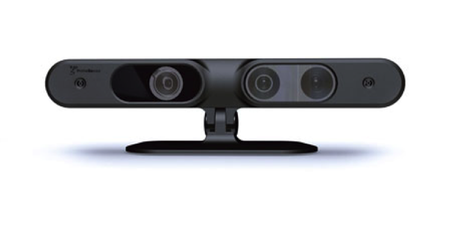
Xtion Model von Asus
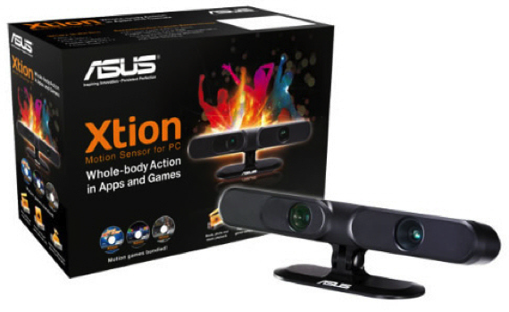
Einblick ins Innere
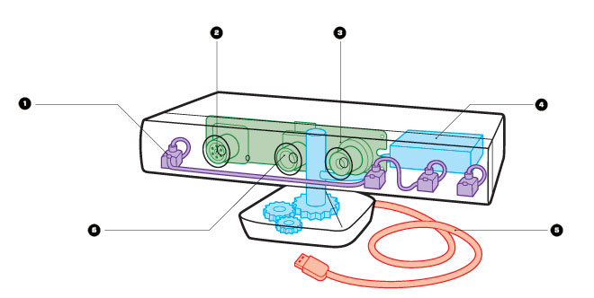
Microphone array
IR emitter
Tiefenberechung durch strukturiertes Licht
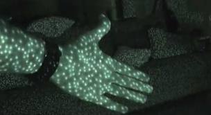
Durch Verschiebung der IR Stuktur berechnet sich die Entfernung
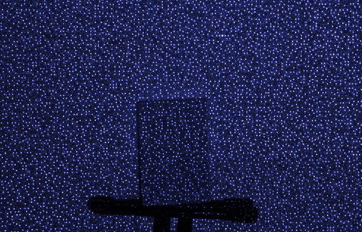
Depth camera
3D Blick aus dem Tiefensensor

Tilt motor
USB cable
Color camera
Der optimale Abstand zur Kinect ist 0,8 bis 4 Meter
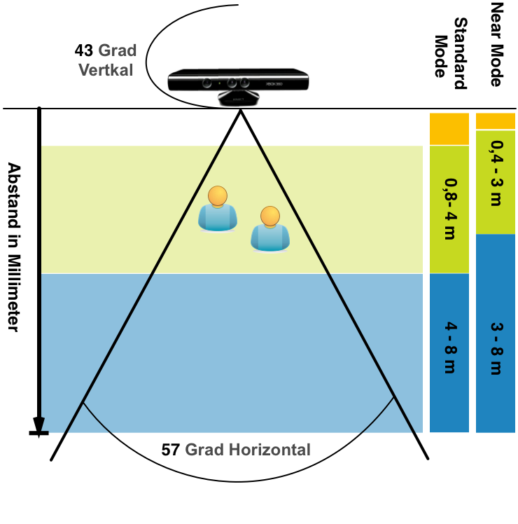
Das besondere an Kinect ist das SDK,
das aus Videosignalen Personen und Gesten berechnet...
Aber: Microsoft Kinect SDK setzt die .NET Plattform voraus
Alternative
Cross Plattform
C++ SDK mit Java JNI Wrappern
OpenNI Architecture
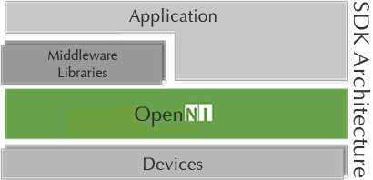
Out of the Box: OpenNI Gesten
- Wave
- Click
- RaiseHand
- MovingHand
Hands on,
Gestenerkennung mit Java
Gestenerkennung mit Java
Warum nicht auch im Web-Browser?
"ZigFoo" ist ein Browserplugin das Kinect-Events in den Browser sendet
User Tracking bis zu 6 Person
TODO: DEMO
Skelet mit 21 Joint Poins
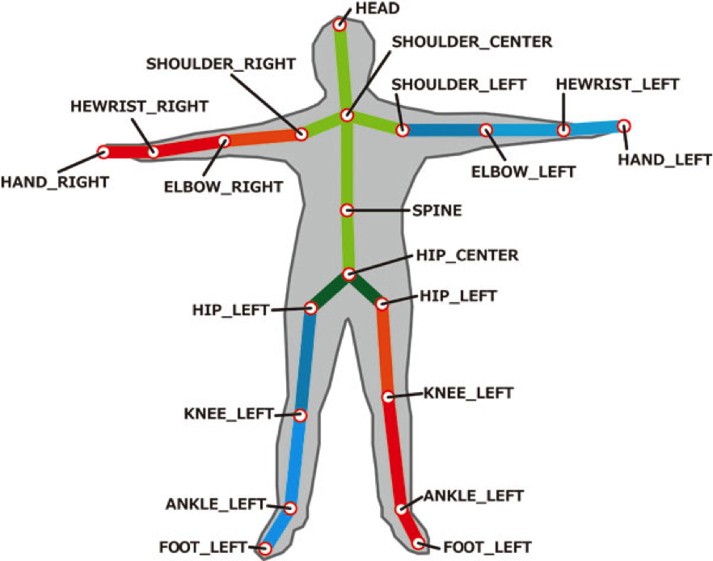
code